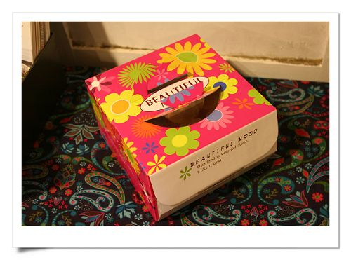
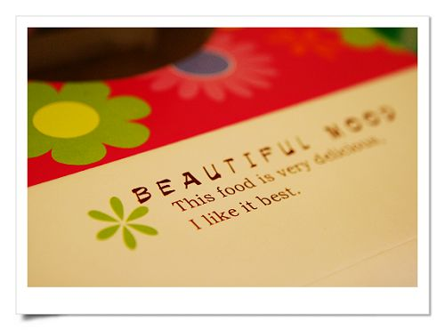

小原子*蛋糕 @ Feb 25, 2010
手机忘在办公室一夜....和扑土聊天，聊得我心旌荡漾，快12点才到家。吃到小原子烘焙的提拉米苏，以及没有酸奶味的酸奶蛋糕，桌上三个圆饼也被我一个人吃掉。扑土的手撕鱿鱼，沾上酱油芥末...美味之极。真希望能倒带到昨晚，重新再吃一遍~
即使私家烘焙的蛋糕也有赏心悦目的包装；

这些没有酸奶味儿的酸奶蛋糕安静地呆在盒子里等着我们去享用！为何叫酸奶蛋糕只等小原子解答。有些蛋糕吃起来会有点腥气儿，为什么呢？和鸡蛋有关，烘焙蛋糕要用洋鸡蛋喔；

同情一下还没吃到的那几位.......

在冰箱里冰了一宿的提拉米苏，口感甚好，加之小原子慷慨用料，外面可买不到这么货真价实的甜点。把左边的提拉米苏涂抹到右边的酸奶蛋糕上，混合着吃也好。

没有蛋糕全部是料的提拉米苏，据说一个8寸的提拉米苏用料的成本多达200多元，普通原料的成本也有160元左右。我吃完一个提拉米苏，等着扑土劝我吃第二个，但是...没等到...

蛋糕盒上的字母真正表达了我们这些吃货的心情，吃着小原子蛋糕，我们有什么理由不积极生活，乱发脾气以及对得不到的东西毫无涵养宣泄愤慨呢？与美好之物相伴，怎能不美好！

16 Responses to “小原子*蛋糕”
2010-02-25
可以向毛主席保证；真的就是酸奶！问问下午才做了个大盆酸奶蛋糕。相机真好，照的那个清楚~~
2010-02-25
那为何没有酸奶味儿呢？
2010-02-25
我是这么理解的；通过蛋黄分解蛋青再分解乃至黄油的香味，最后热量蒸发……酸味就么的来，剩下的就是奶~~
2010-02-25
还是红枣酸奶蛋糕么？可能红枣味道比较浓？
2010-02-25
红枣只有你一个人吃到唠，哼，小原子偏心！
2010-02-25
红枣是我尝试品，以前一直不敢乱篡人家方子。周六我搞红枣，我都觉得红枣味浓点好吃点。
2010-02-25
芒果味应该比红枣味更得人心，哈哈哈哈哈~
2010-02-25
是的，很赞同你博客里的那句“与美好事物相伴怎能不美好”，何况还有一群那么美好可爱热爱生活的好朋友，呵呵
2010-02-25
有芒果酸奶么？带果粒的那种不行。小原子是倒的光明红枣酸奶进去的。
2010-02-25
小原子，能否打包寄来苏州啊。。。。。
Christina可真幸福，小原子原来是DIY高手！
2010-02-25
倒！COSTA使用的芒果浓缩汁，据说麦德龙有售，那个能用在蛋糕上吗？
2010-02-25
才爬上来。
那个，小原子做得“心灵手巧”，茶姑娘吃得也“心灵手巧”。一样好吃食，没有好的吃食人也不会完美。
2010-02-26
the last photo: I would amend it as “ I like it the most”
2010-02-26
有机会请你们尝尝我的手艺 ~~玛格丽特小饼~~
2010-02-26
口水……
2010-02-26
楼上的应该会自己做蛋糕吧？能反手自己卷头发，正手做蛋糕应该容易些^_^哈哈哈哈哈~
Leave A Reply
存档只读，评论已关闭。